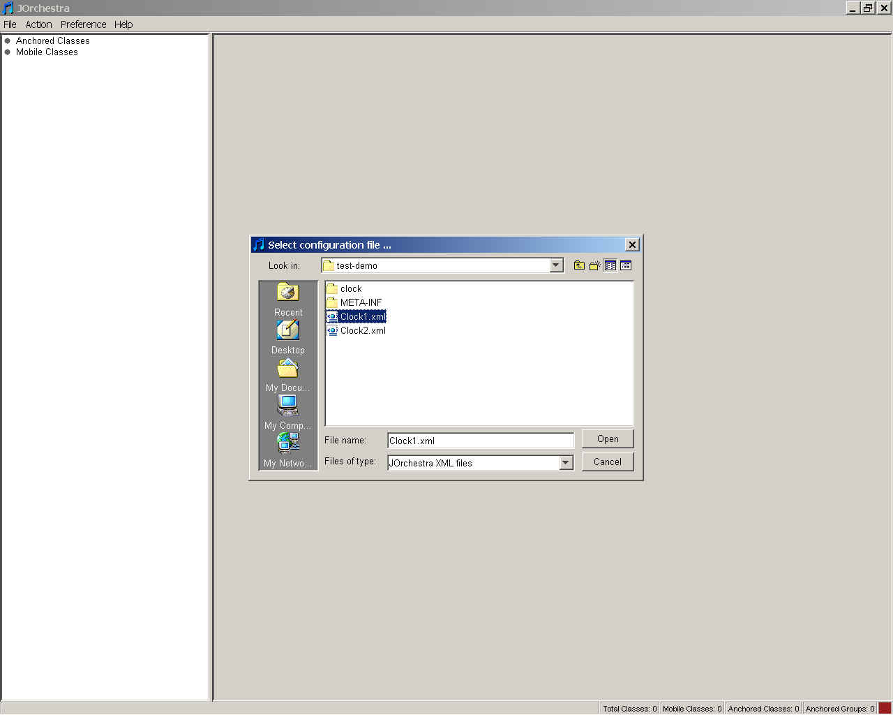
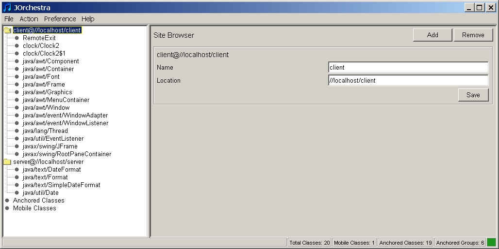
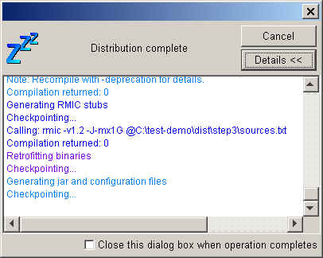
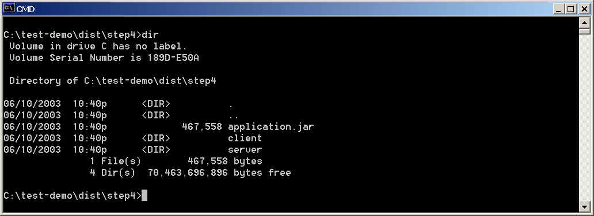
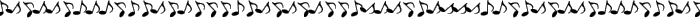

1) Download the clock_example.jar
archive file.
2) Unjar the downloaded archive file: jar xvf clock_example.jar.
This example a slightly modified version of the Clock
applet demo distributed
as part of Sun's JDK. The modifications included changing the demo from an
applet to an application and placing the source code into a package. Make
sure
that you can run the original centralized version of the example:
3) java clock.Clock2
This analog clock application continuously gets current time from the
system and displays
it on a graphical screen. We would like to partition this application in
such a way so
that it would display the time info from a remote site. In other words, we would like
to get the time info on the server site and display it on the client.
4) Start J-Orchestra: java -jar jorchestra.jar
5) J-Orchestra allows saving a completed partitioning configuration to a
disk file. There are two such
configuration files included with this example.
Choose File/Load menu option:

Choose Clock1.xml file. If J-Orchestra prompts you for "the source
classes' location", enter the directory where you saved the example's
archive.

6) Choose Action/Distribute menu option and select the output directory
for the partitioning.
7) Wait until the J-Orchestra partitioning process runs to completion.

8) Start the command line interpreter and go to the output directory. Go to step4
directory.
This is the last step of the distribution process.
What you see should look something similar to:

Application.jar contains the distributed files that have to be distributed
to all the sites of the distribution (client and server in this case).
"client" and "server" directories contain various
configuration files specific to each distribution site.
9) Now you are ready to run the distributed partitioned application.
Make sure you have either jorchestra.jar or jorch_runtime.jar in your
CLASSPATH.
In this configuration, we are going to run the distributed application
on the same machine but in two different
processes.
10) Change the directory to "client".
Unjar the application.jar archive: jar xvf ..\application.jar
11) Start another command line window. Change the directory to
"server".
Unjar the application.jar archive: jar xvf ..\application.jar
12) In the server window start J-Orchestra Object Factory Server by running
the generated script: startServer.sh or startServer.bat, depending
on the operating system.
13) In the client window run the client: java
remotecapable.clock.Clock2
Good luck!

Last Modified:
June 16, 2003